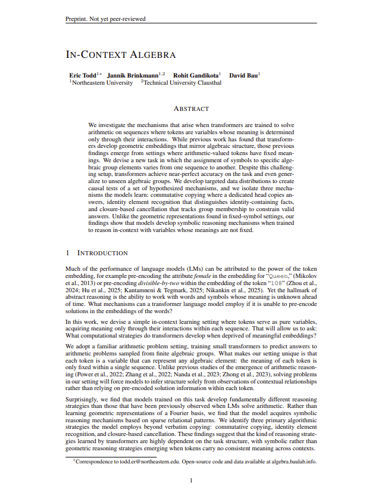 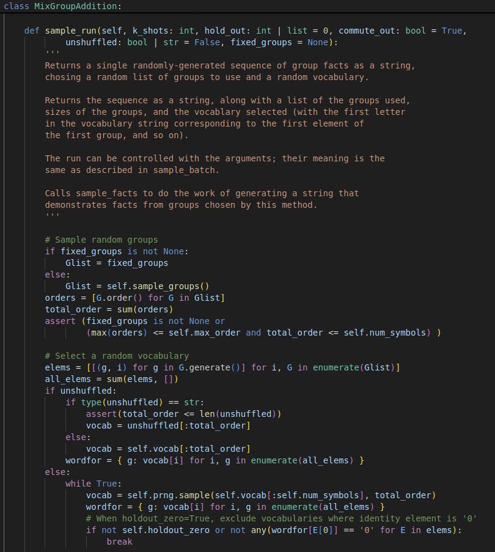
ArXiv
Preprint
Source Code
Github
Data
Much of the performance of language models (LMs) can be attributed to the power of token embeddings; prior work has shown that token embeddings can pre-encode rich semantic, syntactic, and numeric structure. However, the hallmark of abstract reasoning is the ability to work with words and symbols whose meaning is unknown ahead of time.
In this paper, we design an in-context learning setting to study the computational strategies that transformers develop to solve abstract arithmetic tasks. What makes our setting unique is that each token is a variable that can represent any algebraic element, and tokens acquire meaning only through their interactions within a sequence. In contrast to the geometric representations learned for numeric reasoning seen in prior work (where token meanings are fixed), we find that models develop symbolic reasoning mechanisms based on sparse relational patterns. Our findings suggest that the kinds of reasoning strategies learned by transformers are dependent on the task structure.
We train transformers to solve arithmetic problems sampled from a mixture of finite algebraic groups (like cyclic and dihedral groups). Each task sequence presents several examples of products between elements in a group with the goal that models will learn to predict the outcome of unseen group products. However, key challenge is that each token is a variable whose meaning changes between sequences. For example, the symbol "g" might represent the identity in one sequence but a 90-degree rotation in another. Models can infer what each symbol means only from how it interacts with other symbols in-context. You can try to solve some example in-context algebra sequences for yourself below.
Can you predict the answer? Look at the sequence of facts below and try to figure out what comes next:
We generate in-context algebra sequences in three steps:
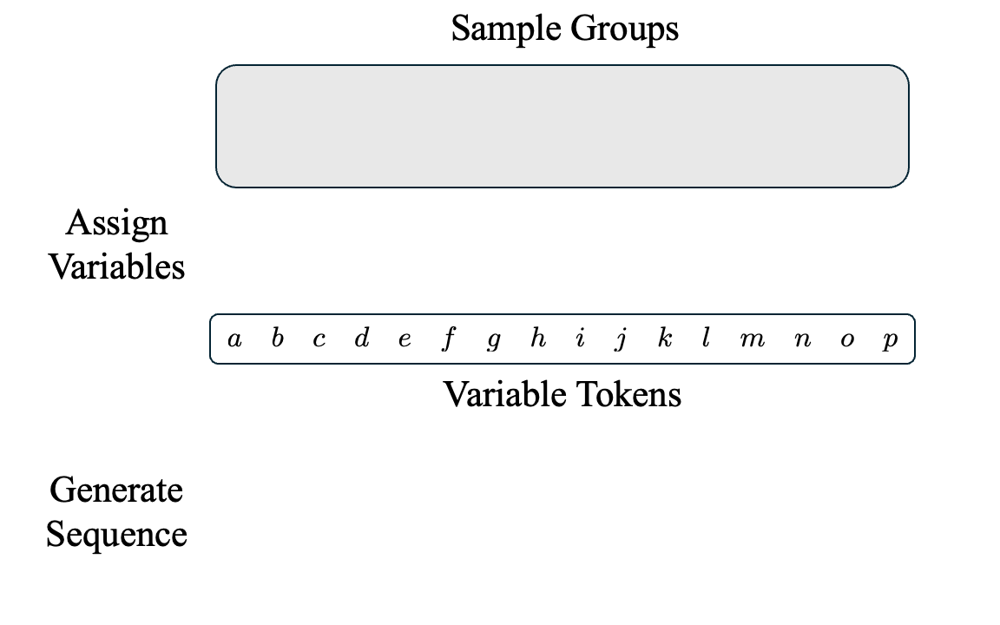
Models achieve near-perfect hold-out accuracy for in-distribution groups: (a) cyclic groups and (b) dihedral groups. In general, hold-out performance improves as more facts are given as context to the model. More surprising is the model's generalization to (c) unseen algebraic groups. Models also perform well on semigroups, but worse on quasigroups and collapse on magmas (also shown in (c)).
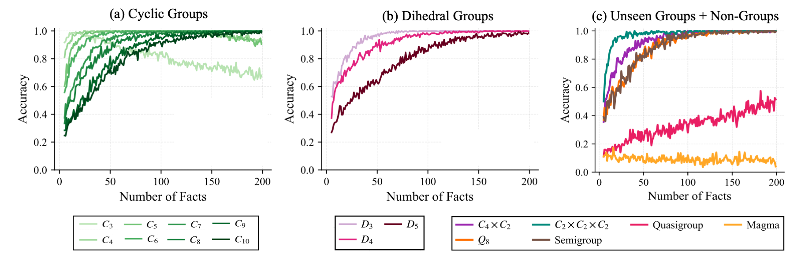
As you probably saw when trying to solve different sequences, it's possible that multiple algorithms could theoretically produce correct predictions. This can make it challenging to identify which mechanisms the model actually implements. To disambiguate between potential mechanisms, we design five targeted data distributions to test specific algorithms that can solve algebra sequences when a corresponding set of facts is present in the context: Verbatim Copying, Commutative Copying, Identity Element Recognition, Closure-Based Cancellation, and Associative Composition.
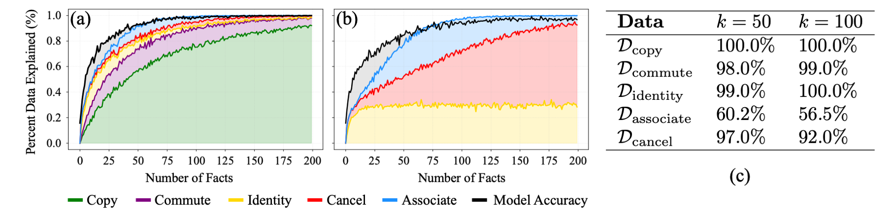
We measure the percentage of (a) training sequences and (b) hold-out sequences that these algorithms can theoretically solve. We find that they cover 90.4% AUC of the training sequences and 84.7% AUC of hold-out sequences, within 2-3% of the model's empirical performance (shown in black). The model shows very good empirical performance on four of the five targeted data distributions, with associativity being more challenging.
Based on the results above, we investigate how the model implements the algorithms with stronger empirical evidence: Verbatim Copying, Commutative Copying, Identity Element Recognition, and Closure-Based Cancellation. The results in this section are based on a single representative model, though we see similar results across training runs.
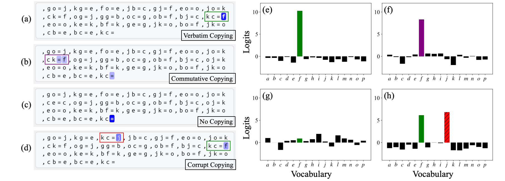
We find a single attention head is primarily responsible for copying answers from context, similar to the induction heads from (Olsson et al., 2022) or n-gram heads seen in (Akyürek et al., 2024). This head performs both verbatim copying (when an exact duplicate fact exists) and commutative copying (when a commutative pair exists, e.g., copying "ba = c" when the query is "ab ="). However, because not all products are commutative (in dihedral groups), this copying heuristic can't always solve a sequence, and additional mechanisms described below refine the prediction.
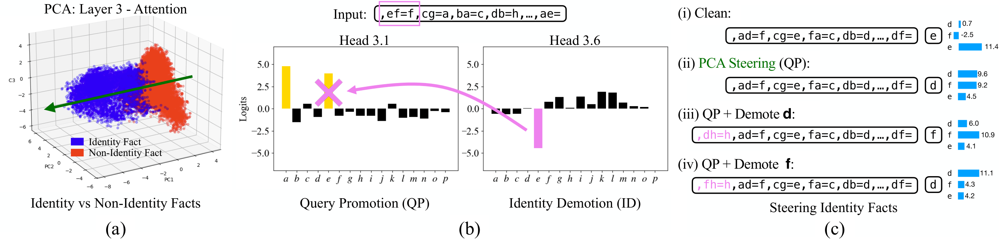
The model learns to represent facts with identity elements differently from other facts, which can be seen clearly when using PCA on the model's hidden states. The model solves identity facts from the interaction of two complementary mechanisms: query promotion which promotes both variables in the question as potential answers, and identity demotion which attends to and suppresses the known identity element. When both activate simultaneously, the non-identity token is correctly selected.
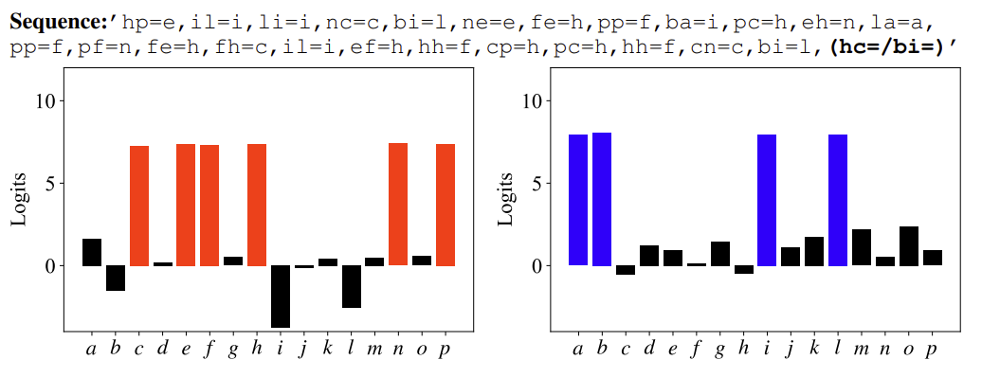
The final mechanism we study is closure-based cancellation. It is also a combination of two complementary sub-mechanisms: (1) tracking and promoting variables belonging to the same algebraic group (i.e., the closure), and (2) systematically eliminating invalid answers using the cancellation law. The difference between these two sets produces the final answer. We verify this mechanism by identifying subspaces that causally represent the closure and cancellation sets, though we find evidence this computation is spread across several attention heads.
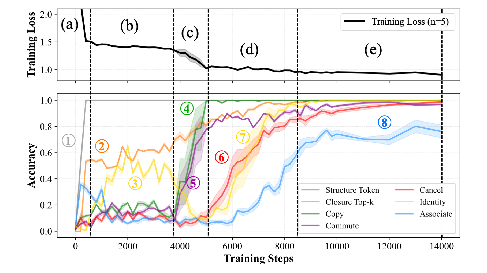
We find that models undergo a similar sequence of phase transitions during training across different seeds and configurations. Models first learn to (1) predict structural tokens, followed quickly by (2) learning to compute group closure: learning that combining two group elements always yields another valid group element. At the same time, the model learns the (3) query promotion submechanism, achieving around 50% on identity sequences. The next sharp drop in loss corresponds to the model learning (4) contextual copying, first reproducing facts verbatim and then extending to (5) commutative copying. Later mechanisms emerge more gradually. The model develops \textbf{identity recognition}, steadily improving on identity-related facts Once the model can retrieve facts from context, it quickly learns to solve both identity and cancellation facts at the same time. We hypothesize these are learned jointly because the (6) elimination subspace and the (7) identity demotion mechanism perform similar functions, and their "promotion" submechanism counterparts are learned at similar times earlier in training. Finally, models begin to solve some associative sequences, though this happ. This learning trajectory suggests that models acquire discrete skills in a particular order, building on previously learned mechanisms to learn more complex ones.
Our work builds on insights from a growing body of research investigating how transformers learn to perform numeric reasoning tasks, both in small models trained on algorithmic tasks and in large pre-trained language models.
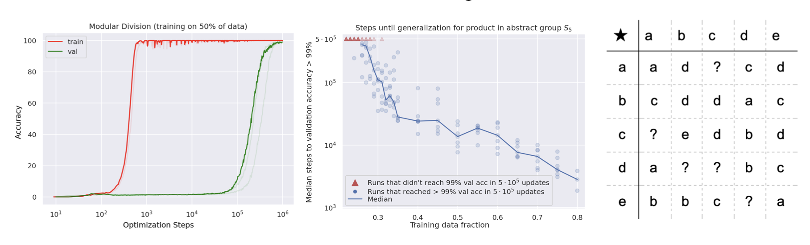
Notes: The first paper to identify and analyze "grokking", where transformers suddenly generalize after extended training. They find model outputs often reflect the structure of the underlying algorithmic task.
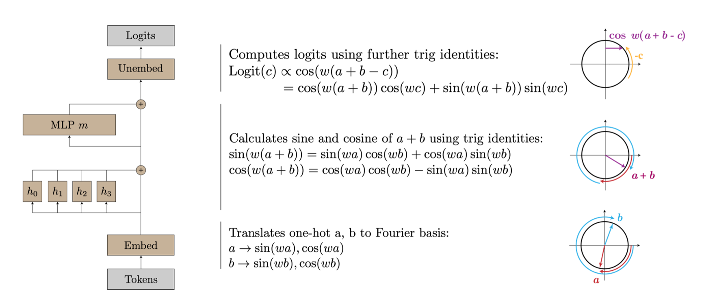
Notes: The authors reverse-engineer how a one-layer transformer learns to solve modular addition via Fourier token embeddings. They identify three distinct phases of learning where the model first memorizes, then develops generalizing fourier features, then "cleans up" by removing the memorizing solution.
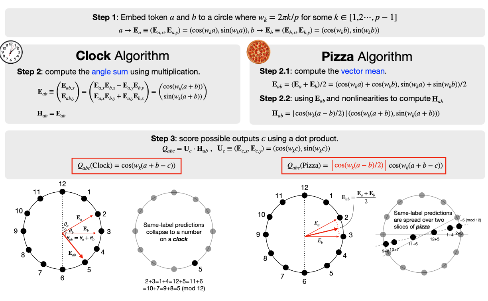
Notes: Transformers can learn to solve modular addition by implementing either a "clock" algorithm or a "pizza" algorithm, depending on the random seed used for training. They analyze the mechanisms behind both algorithms, showing both rely on Fourier token embeddings.
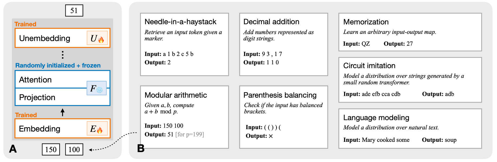
Notes: Transformers with trained token embeddings, but otherwise frozen random weights can still implement familiar geometric solutions to solve algorithmic problems, including Fourier token embedddings for modular arithmetic.
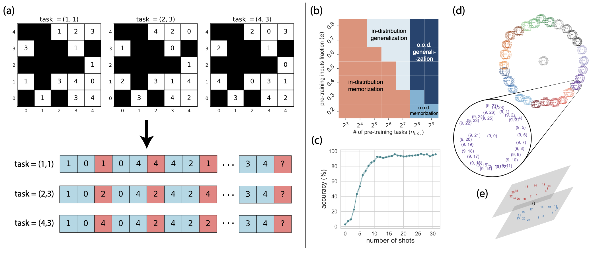
Notes: This work investigates in-context learning in transformers using modular arithmetic tasks, demonstrating that models transition from memorization to algorithmic generalization (inferring latent task parameters) as the number of tasks shown during pretraining increases.
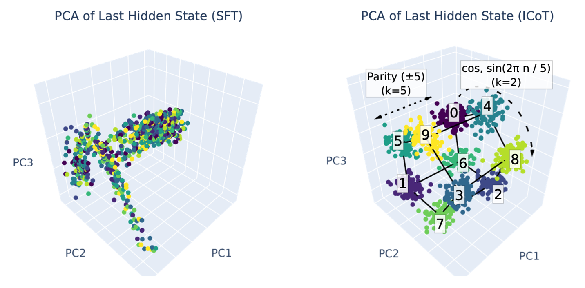
Notes: Models can learn multiplication via implicit chain-of-thought because they learn to represent numbers using a Fourier basis and represent partial products for long-range computations, while standard fine-tuning does not induce these behaviors and thus fails to solve multiplication.
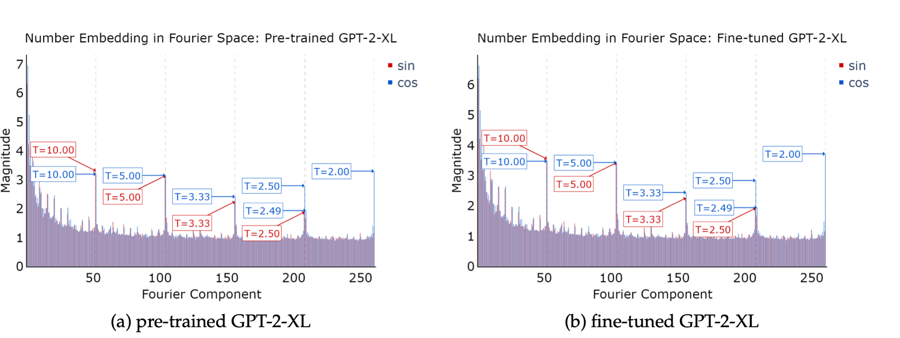
Notes: Demonstrates that LLMs use Fourier features encoded in their hidden states to solve addition problems. Appropriate pretraining teaches models to better encode Fourier features in number token embeddings.
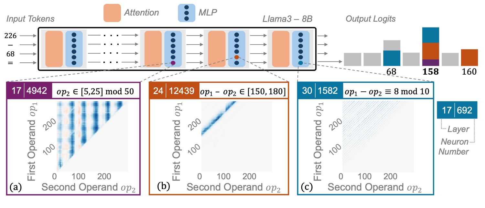
Notes: The authors show that pre-trained LLMs use a "bag of heuristics" to solve arithmetic problems. They characterize heuristics that task-specific MLP neurons implement (e.g., number ranges, modulo, and other patterns), which together produce correct arithmetic answers.
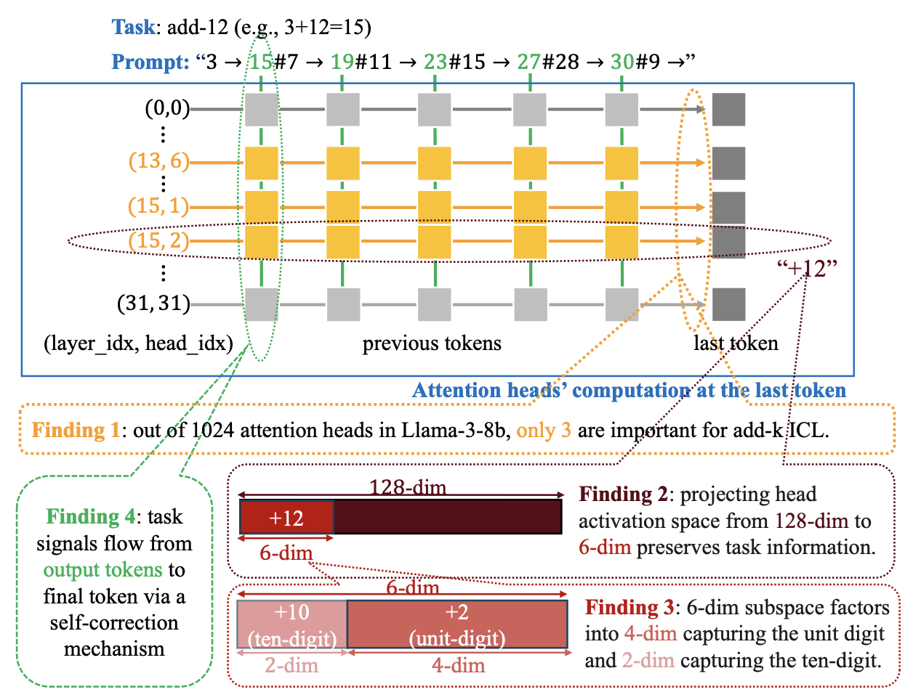
Notes: This work studies how LLMs perform addition in-context (add-k), and isolate a low-rank subspace relevant for the task.
They find the dimensions correspond to tracking the unit digit with trigonometric functions at periods of 2,5 and 10, as well as its magnitude.
They identify a self-correction mechanism where later examples suppress errors from earlier demonstrations, improving the prediction.
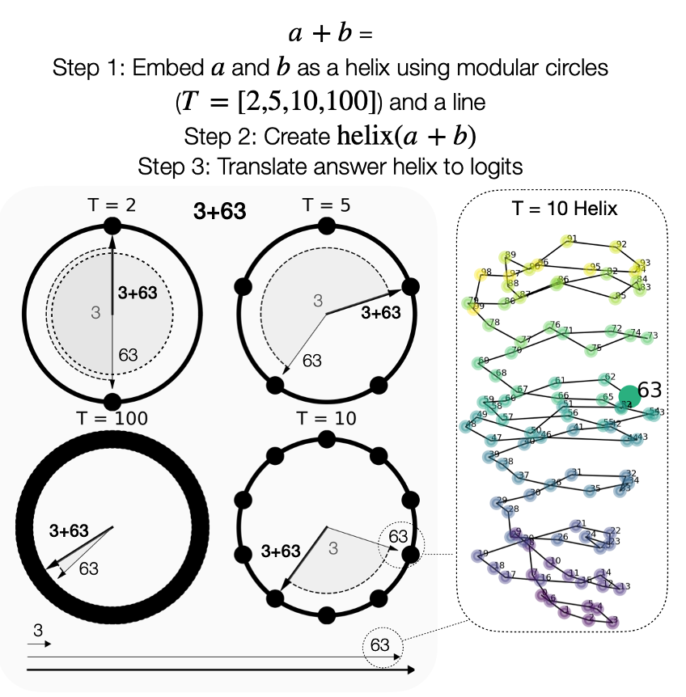
Notes: This paper investigates how LLMs compute addition, and show that pretrained LLMs represent numbers as a generalized helix which is implicated in various computations for mathematical problem solving. The helix can be manipulated using the "clock" algorithm to perform addition.
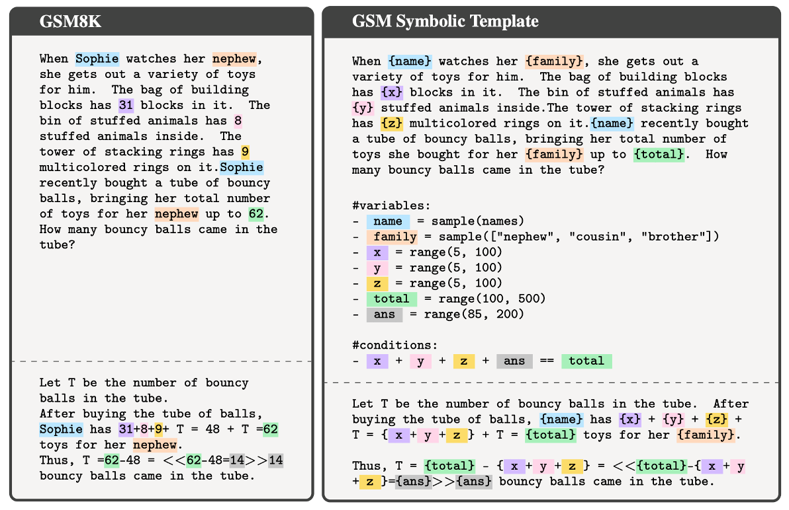
Notes: Introduces GSM-symbolic, a variant of GSM8K (Cobbe et al., 2021) that uses symbolic templates to generate a more diverse set of grade school math problems. They find LLM performance has high variance to rephrasings and lacks robustness to changes in numeric values of simple math problems.
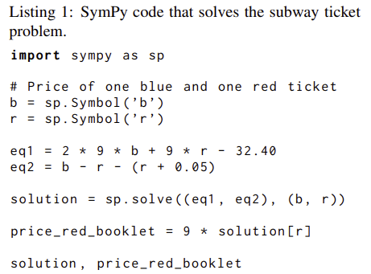
Notes: The authors investigate word problems by separating text interpretation from equation-solving. They find that small LLMs struggle significantly more with text comprehension than with solving purely expressed math equations.
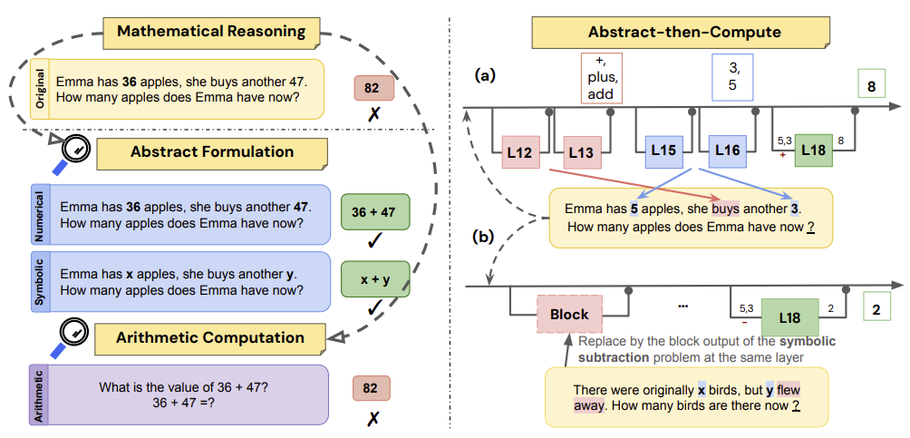
Notes: This paper studies abstract formulation versus arithmetic computation in simple word problems (GSM8K). They find LLMs are better at generating variable-based solutions to word problems compared to executing exact arithmetic computations.
The paper can be cited as follows.
Eric Todd, Jannik Brinkmann, Rohit Gandikota, and David Bau. "In-Context Algebra." arXiv preprint arXiv:2512.16902, (2025).
@article{todd2025incontextalgebra,
title={In-Context Algebra},
author={Eric Todd and Jannik Brinkmann and Rohit Gandikota and David Bau},
journal={arxiv preprint arXiv:2512.16902},
year={2025},
url={https://arxiv.org/abs/2512.16902}
}